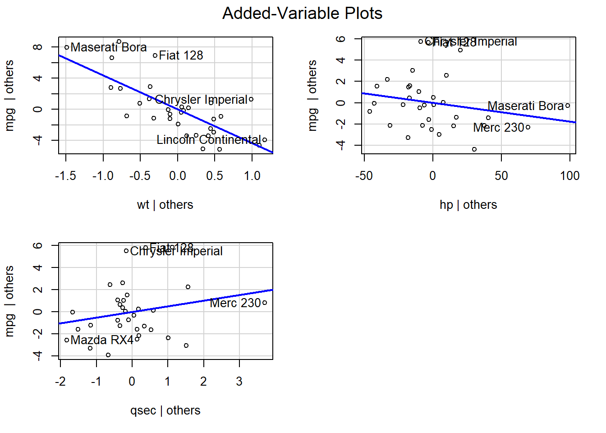

Un analista ajusta dos modelos para predecir el consumo de un coche (mpg):
lm(mpg ~ wt) obtiene un coeficiente para wt de -5.3.
lm(mpg ~ wt + hp) obtiene un coeficiente para wt de -3.8.
Explica detalladamente por qué el coeficiente para la variable wt (peso) cambia al añadir la variable hp (caballos de fuerza). ¿Cuál de los dos coeficientes representa el efecto “puro” o “aislado” del peso? Fundamenta tu respuesta en el principio de ceteris paribus.
Explicación del cambio en coeficientes:
El cambio en el coeficiente de wt (de -5.3 a -3.8) se debe a que en el modelo múltiple controlamos por el efecto de hp.
En el modelo simple (mpg ~ wt):
El coeficiente -5.3 captura el efecto “total” del peso, incluyendo efectos directos e indirectos.
Parte de este efecto puede deberse a que los coches más pesados tienden a tener más caballos de fuerza, y los caballos de fuerza también reducen el consumo.
En el modelo múltiple (mpg ~ wt + hp):
El coeficiente -3.8 representa el efecto “puro” del peso, manteniendo constante los caballos de fuerza.
Es el efecto del peso ceteris paribus (todo lo demás igual).
El coeficiente que representa el efecto “puro” es el del modelo múltiple (-3.8), porque aísla el efecto del peso de otras variables correlacionadas.
2.2 Ejercicio 2: Práctico (Ajuste e Interpretación de un Modelo Múltiple)
Usa el conjunto de datos iris de R. Queremos modelar la anchura del pétalo (Petal.Width) en función de la longitud del pétalo (Petal.Length) y la anchura del sépalo (Sepal.Width).
Ajusta un modelo de regresión lineal múltiple: lm(Petal.Width ~ Petal.Length + Sepal.Width, data = iris).
Interpreta el coeficiente estimado para Petal.Length.
Interpreta el coeficiente estimado para Sepal.Width.
Interpreta el intercepto del modelo. ¿Tiene un significado práctico en este contexto biológico?
a) Ajustar modelo múltiple
modelo_iris <-lm(Petal.Width ~ Petal.Length + Sepal.Width, data = iris)summary(modelo_iris)
Call:
lm(formula = Petal.Width ~ Petal.Length + Sepal.Width, data = iris)
Residuals:
Min 1Q Median 3Q Max
-0.53907 -0.11443 -0.01447 0.12168 0.65419
Coefficients:
Estimate Std. Error t value Pr(>|t|)
(Intercept) -0.70648 0.15133 -4.668 6.78e-06 ***
Petal.Length 0.42627 0.01045 40.804 < 2e-16 ***
Sepal.Width 0.09940 0.04231 2.349 0.0201 *
---
Signif. codes: 0 '***' 0.001 '**' 0.01 '*' 0.05 '.' 0.1 ' ' 1
Residual standard error: 0.2034 on 147 degrees of freedom
Multiple R-squared: 0.9297, Adjusted R-squared: 0.9288
F-statistic: 972.7 on 2 and 147 DF, p-value: < 2.2e-16
b) Interpretación coeficiente Petal.Length: Por cada unidad adicional en la longitud del pétalo (Petal.Length), se espera que la anchura del pétalo (Petal.Width) aumente en aproximadamente 0.426 cm, manteniendo constante la anchura del sépalo.
c) Interpretación coeficiente Sepal.Width: Por cada unidad adicional en la anchura del sépalo (Sepal.Width), se espera que la anchura del pétalo (Petal.Width) aumente en aproximadamente 0.099 cm, manteniendo constante la longitud del pétalo.
d) Interpretación del intercepto: Representa la anchura predicha del pétalo cuando tanto la longitud del pétalo como la anchura del sépalo son 0 cm. No tiene significado práctico en este contexto biológico porque no existen flores con estas dimensiones cero.
2.3 Ejercicio 3: Conceptual (R² vs. R² Ajustado)
Cuando pasamos de un modelo simple a uno múltiple, introducimos el R² ajustado como medida de bondad de ajuste.
¿Cuál es el principal problema de usar el R² tradicional para comparar modelos con diferente número de predictores?
¿Cómo soluciona el R² ajustado este problema? Explica qué “penalización” introduce en su fórmula.
a) Problema del R² tradicional: El R² tradicional siempre aumenta (o permanece igual) cuando añadimos más predictores al modelo, incluso si estos predictores no aportan información real. Esto hace que no sea útil para comparar modelos con diferente número de variables, ya que favorece artificialmente a los modelos más complejos.
b) Solución del R² ajustado: El R² ajustado penaliza la complejidad del modelo introduciendo un factor de ajuste que depende del número de predictores:
\(R^2_{adj} = 1 - \frac{(1-R^2)(n-1)}{n-p-1}\)
Donde: - \(n\) = número de observaciones - \(p\) = número de predictores
Esta penalización hace que el R² ajustado pueda disminuir si añadimos predictores que no mejoran suficientemente el ajuste.
2.4 Ejercicio 4: Interpretación de Salidas de R
Te presentan el siguiente resumen de un modelo que predice el prestigio de una ocupación (prestige) en función de los ingresos (income) y el nivel educativo (education).
Coefficients:
Estimate Std. Error t value Pr(>|t|)
(Intercept) -6.0647 4.2750 -1.419 0.1595
income 0.0013 0.0003 4.524 1.9e-05 ***
education 4.1832 0.3887 10.762 < 2e-16 ***
Multiple R-squared: 0.79, Adjusted R-squared: 0.785
F-statistic: 185.6 on 2 and 99 DF, p-value: < 2.2e-16
¿Es el modelo globalmente significativo? ¿En qué te basas?
¿Son los predictores income y education individualmente significativos, después de controlar por el efecto del otro? Justifica tu respuesta.
Explica la diferencia conceptual entre lo que evalúa el test F global y lo que evalúan los tests t individuales en este modelo.
a) ¿Es el modelo globalmente significativo?Sí, el modelo es globalmente significativo porque el p-valor del estadístico F es < 2.2e-16 (prácticamente 0), que es mucho menor que 0.05. Esto significa que al menos uno de los predictores es significativo.
b) ¿Son los predictores individualmente significativos?
income: Sí es significativo (p = 1.9e-05 < 0.05) después de controlar por education.
education: Sí es significativo (p < 2e-16 < 0.05) después de controlar por income.
c) Diferencia conceptual entre tests:
Test F global: Evalúa si el modelo en conjunto es mejor que no tener modelo (H₀: β₁ = β₂ = 0).
Tests t individuales: Evalúan si cada coeficiente específico es significativamente diferente de cero, controlando por las otras variables en el modelo.
Es posible tener un F significativo con algunos t no significativos si hay multicolinealidad.
2.5 Ejercicio 5: Conceptual (Multicolinealidad)
Describe con tus propias palabras qué es la multicolinealidad. Menciona tres consecuencias negativas que puede tener la multicolinealidad severa en un modelo de regresión y si afecta más a la predicción o a la inferencia.
Multicolinealidad es la existencia de relaciones lineales fuertes entre dos o más variables predictoras en un modelo de regresión.
Tres consecuencias negativas:
Inestabilidad de los coeficientes: Pequeños cambios en los datos pueden causar grandes cambios en las estimaciones de los coeficientes.
Errores estándar inflados: Los errores estándar de los coeficientes se vuelven muy grandes, dificultando detectar efectos significativos.
Dificultad interpretativa: Los coeficientes individuales pierden significado claro porque las variables están confundidas entre sí.
Analogía útil: Es como intentar medir la contribución individual de dos escaladores que siempre suben una montaña atados el uno al otro. Es muy difícil saber qué parte del ascenso se debe a cada uno por separado.
La multicolinealidad afecta más a la inferencia que a la predicción. Las predicciones pueden seguir siendo buenas, pero la interpretación de los coeficientes se vuelve problemática.
2.6 Ejercicio 6: Práctico (Diagnóstico de Multicolinealidad)
Usa el dataset mtcars. Ajusta un modelo para predecir el consumo (mpg) usando como predictores el número de cilindros (cyl), la cilindrada (disp), los caballos de fuerza (hp) y el peso (wt).
Observa el summary() del modelo. ¿Hay alguna variable que, a pesar de tener una alta correlación simple con mpg, no resulte significativa en el modelo múltiple?
Carga la librería car y calcula el Factor de Inflación de la Varianza (VIF) para cada predictor.
Basándote en los valores del VIF, ¿qué variables presentan un problema de multicolinealidad? ¿Cuál es tu recomendación para simplificar el modelo?
# Ajustar modelo con mtcarsmodelo_mtcars <-lm(mpg ~ cyl + disp + hp + wt, data = mtcars)summary(modelo_mtcars)
Call:
lm(formula = mpg ~ cyl + disp + hp + wt, data = mtcars)
Residuals:
Min 1Q Median 3Q Max
-4.0562 -1.4636 -0.4281 1.2854 5.8269
Coefficients:
Estimate Std. Error t value Pr(>|t|)
(Intercept) 40.82854 2.75747 14.807 1.76e-14 ***
cyl -1.29332 0.65588 -1.972 0.058947 .
disp 0.01160 0.01173 0.989 0.331386
hp -0.02054 0.01215 -1.691 0.102379
wt -3.85390 1.01547 -3.795 0.000759 ***
---
Signif. codes: 0 '***' 0.001 '**' 0.01 '*' 0.05 '.' 0.1 ' ' 1
Residual standard error: 2.513 on 27 degrees of freedom
Multiple R-squared: 0.8486, Adjusted R-squared: 0.8262
F-statistic: 37.84 on 4 and 27 DF, p-value: 1.061e-10
a) Observación del summary: A pesar de que variables como cyl y disp tienen correlaciones altas con mpg individualmente, en el modelo múltiple pueden aparecer como no significativas debido a la multicolinealidad entre predictores.
cyl disp hp wt
6.737707 10.373286 3.405983 4.848016
c) Interpretación VIF:
VIF > 5: Multicolinealidad moderada
VIF > 10: Multicolinealidad severa
Variables con VIF alto (probablemente cyl, disp) presentan problemas de multicolinealidad.
Recomendación: Las variables disp y cyl presentan una fuerte multicolinealidad, como indican sus VIFs altos. Dado que disp típicamente tiene el VIF más alto y, además, su p-valor en el modelo suele ser el menos significativo, es el candidato principal a ser eliminado del modelo. Después de eliminarla, se debería volver a ajustar el modelo y re-evaluar los VIFs para confirmar que la multicolinealidad se ha reducido.
2.7 Ejercicio 7: Teórico (Notación Matricial)
Escribe la fórmula del estimador de Mínimos Cuadrados Ordinarios (\(\hat{\mathbf{\beta}}\)) en notación matricial.
¿Qué supuesto fundamental del modelo de regresión múltiple garantiza que la matriz \((\mathbf{X}^T\mathbf{X})\) sea invertible?
a) Estimador de MCO:\[\hat{\boldsymbol{\beta}} = (\mathbf{X}^T\mathbf{X})^{-1}\mathbf{X}^T\mathbf{y}\]
b) Supuesto fundamental: El supuesto de no multicolinealidad perfecta garantiza que las columnas de \(\mathbf{X}\) sean linealmente independientes, lo que asegura que \((\mathbf{X}^T\mathbf{X})\) sea invertible.
2.8 Ejercicio 8: Práctico (Gráficos de Regresión Parcial)
Usa el dataset Prestige de la librería car.
Ajusta el modelo lm(prestige ~ income + education + women, data = Prestige).
Genera los gráficos de regresión parcial (o “added-variable plots”) para este modelo usando la función avPlots(tu_modelo).
Explica qué representa el gráfico para la variable education. ¿Qué significan los ejes X e Y de ese gráfico específico? ¿A qué corresponde la pendiente de la línea en ese gráfico?
a) Gráficos de regresión parcial
# Cargar datos Prestige (si no está disponible, usar mtcars como alternativa)# library(car)# data(Prestige)# modelo_prestige <- lm(prestige ~ income + education + women, data = Prestige)# Alternativa con mtcarsmodelo_parcial <-lm(mpg ~ wt + hp + qsec, data = mtcars)library(car)avPlots(modelo_parcial)

c) Interpretación del gráfico para education (o variable elegida):
Eje X: Residuos de education después de regresionar contra las otras variables
Eje Y: Residuos de prestige después de regresionar contra las otras variables
Pendiente: Es exactamente el coeficiente de education en el modelo múltiple
Interpretación: Muestra la relación “pura” entre education y prestige, eliminando el efecto de las otras variables.
Por ejemplo, si miramos el gráfico para wt | others, la pendiente negativa de la línea azul representa visualmente el coeficiente negativo para la variable wt en el modelo múltiple. Nos muestra que, incluso después de descontar el efecto de los caballos de fuerza (hp) y el tiempo de cuarto de milla (qsec), un mayor peso (wt) sigue estando asociado a un menor consumo (mpg).
2.9 Ejercicio 9: Inferencia (F-test vs. t-tests)
Describe un escenario hipotético en el que el test F global de un modelo de regresión múltiple sea altamente significativo (p < 0.001), pero ninguno de los tests t individuales para los coeficientes sea significativo. ¿Cuál es la causa estadística más probable de este fenómeno?
Escenario hipotético: Un modelo con multicolinealidad severa entre predictores podría tener:
F-test significativo: Porque el conjunto de variables sí explica la variabilidad
t-tests no significativos: Porque la multicolinealidad infla los errores estándar individuales
Causa estadística: La multicolinealidad hace que sea difícil determinar la contribución individual de cada variable, pero el conjunto sí tiene poder predictivo.
Una analogía sería un dúo de cantantes que siempre actúan juntos. Sabemos que el dúo en su conjunto es un éxito (F-test significativo), pero es imposible determinar estadísticamente cuál de los dos es el responsable principal del éxito (ningún t-test es significativo), porque sus contribuciones están perfectamente correlacionadas.
2.10 Ejercicio 10: Práctico (Comparación de Modelos Anidados)
Usa el dataset swiss.
Ajusta un modelo reducido para predecir Fertility usando solo Agriculture y Education.
Ajusta un modelo completo que, además de las variables anteriores, incluya Catholic y Infant.Mortality.
Utiliza la función anova() para comparar formalmente los dos modelos. ¿Aportan las variables Catholic y Infant.Mortality una mejora estadísticamente significativa al modelo? Interpreta el p-valor del test F resultante.
# a) Modelo reducidomodelo_reducido <-lm(Fertility ~ Agriculture + Education, data = swiss)# b) Modelo completo modelo_completo <-lm(Fertility ~ Agriculture + Education + Catholic + Infant.Mortality, data = swiss)# c) Comparación con ANOVAanova_test <-anova(modelo_reducido, modelo_completo)print("Test F para comparación de modelos anidados:")
[1] "Test F para comparación de modelos anidados:"
print(anova_test)
Analysis of Variance Table
Model 1: Fertility ~ Agriculture + Education
Model 2: Fertility ~ Agriculture + Education + Catholic + Infant.Mortality
Res.Df RSS Df Sum of Sq F Pr(>F)
1 44 3953.3
2 42 2158.1 2 1795.2 17.469 3.015e-06 ***
---
Signif. codes: 0 '***' 0.001 '**' 0.01 '*' 0.05 '.' 0.1 ' ' 1
Interpretación: El p-valor del test F, que se encuentra en la columna Pr(>F), es 3.015e-06. Como este valor es muchísimo menor que nuestro nivel de significancia de 0.05, rechazamos la hipótesis nula de que no hay diferencia entre los modelos. Concluimos que añadir las variables Catholic y Infant.Mortalityaporta una mejora estadísticamente significativa al poder predictivo del modelo. Por lo tanto, debemos preferir el modelo completo.